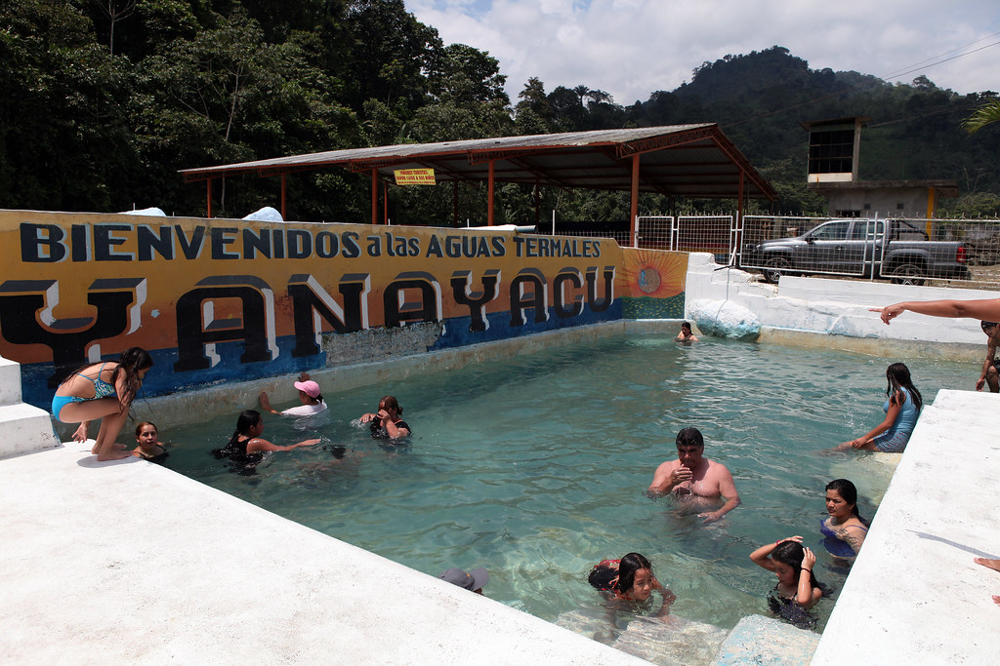
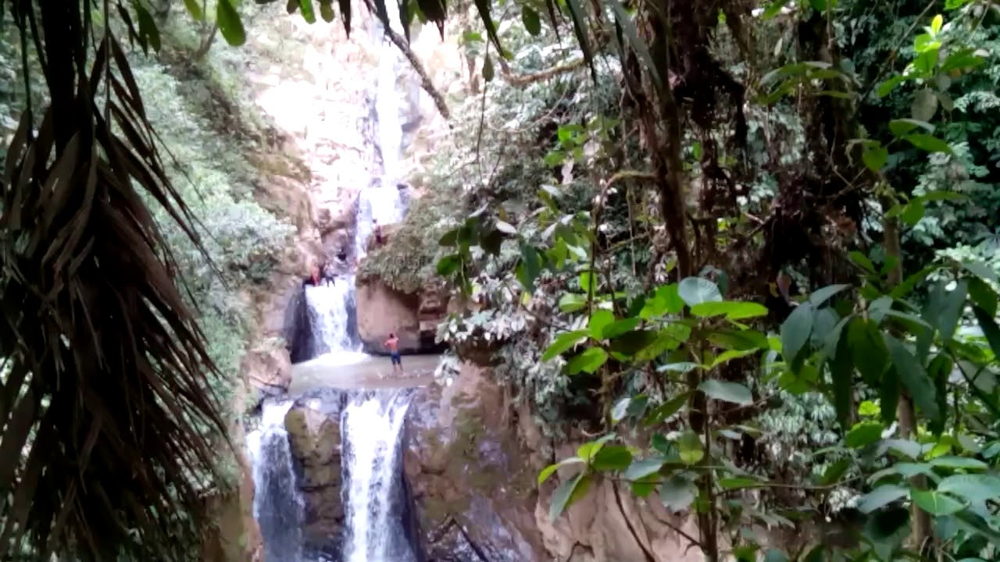
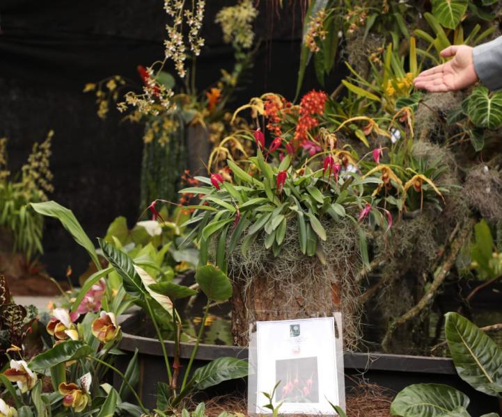

Lugares más destacados Aguas termales "YANAYACU"  Más información sobre Yanayacu Las Cascadas de Cochancay  Más información sobre las Cascadas de Cochancay Ruta de las Orquídeas  Más información sobre la Ruta de las Orquídeas